In many parts of the SMART application, when many objects (attributes, waypoints, etc...) are toggled on or off, the user can toggle them individually, through the Select All/De-select All, or through another option.
Using the Shift button and selecting a block of entries and hitting the Space Bar, the selected entries will toggle on or off.

Ordering Dates & Times in Report Charts
The following image shows and example of a chart generated from a summary query that includes a group by month clause. The resulting chart is not ordered by date.
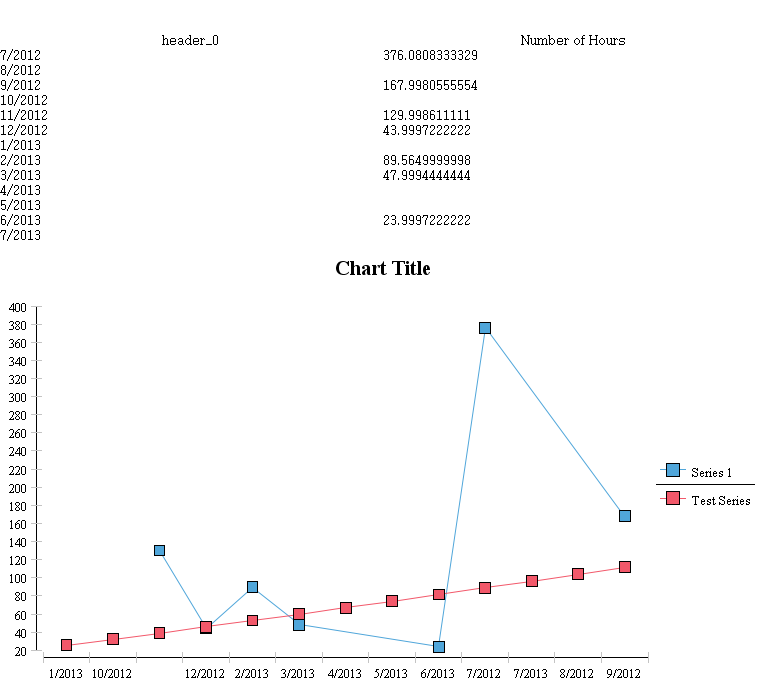
Modifications to the default settings are required to have the chart sort and display the dates and times in chronological order. To the right of the Category (X) Series entry click the sort button (see below).
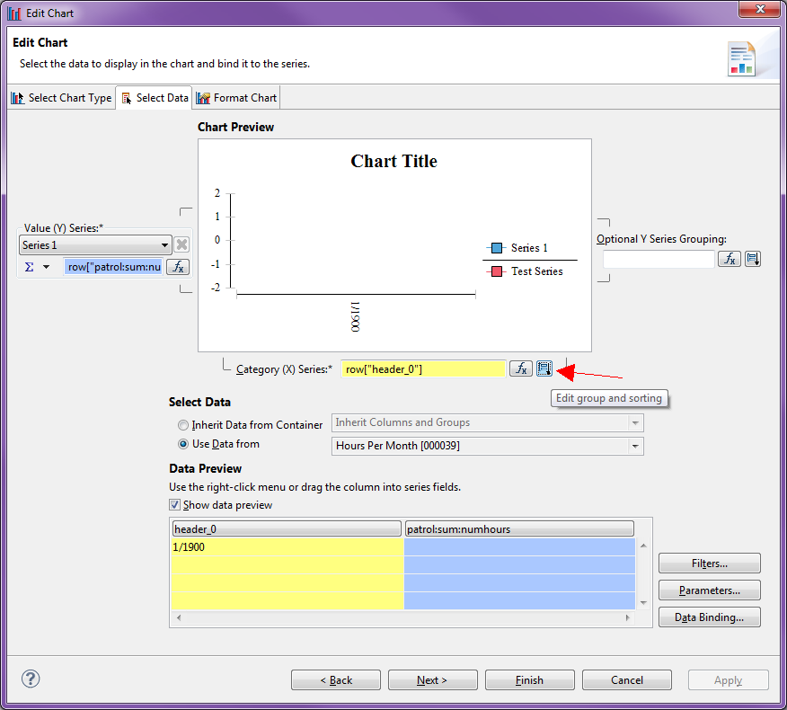
From there the Group and sorting window shows a "Data Sorting" pulldown. This will allow for users to select their preferred sorting method.
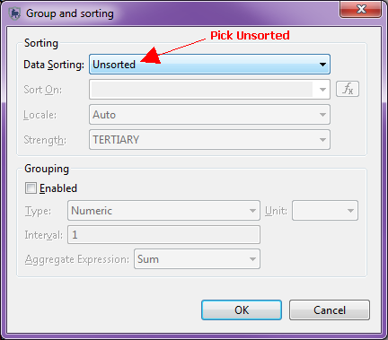
Data Model and Filter Searching
When placed properly the use of a wildcard search asterix (*) placed at the beginning or end of the search string can help isolate the items of interest.
Upon the initial creation of the Conservation Area's data model the administrator will need to decide on which species to include in the Conservation Area. Importing all the species available in the default species list will result in a massive tree of species that will negatively impact performance. It is highly recommended to import only the species that are needed for the Conservation Area. If more species are required at a later date they can be added and used in the patrol observations.
Q.When adding a graticule to the map view it often fails to draw, resulting in a red X on the graticule layer in the Layers list. How do I get the graticule to display?
A. Graticule only supports CRS with unit “meter” on all axes.
To specify the projection for the graticule:
1. Open the graticule style layer (right click on the layer and pick 'Change Styles' or select the layer and use the edit style button).
2. Pick "Projection" page from the list on the left.
3. Select a projection with "meter" on all axes.
4. Apply.
Q. Why is the style editor theme function not working in reports?
A. This is a fundamental problem with the way the theming styler works. It builds themes based on the data in the layer. However, when setting up the report there is no data in the layer yet, hence the error. The query data is not generated until the report is run and dates are provided.
The work around, if you want themed styles in your report, is to:
1. Run the query in the query perspective and set up the theming style using the style editor associated with the query layer.
2. When the themeing style is configured the way you want it, open the style dialog for the layer, and select the 'XML' page from the list on the left.
3. Copy the entire XML snippet shown.
4. Switch back to editing your report.
5. Change the style of the map layer in the report which you want to apply the theming to, and paste the copied XML into the "XML" page of this style dialog.
6. Save.
7. Re-run your report and the data will match your themed style.
Q. Why does SMART take a long time to load the conservation areas? It doesn’t look like it is doing anything.
A. When the SMART application is terminated abnormally (power-off of computer, crashing of computer, etc.) the SMART database performs a validation the next time it is run. This validation can take a while and is performed when the system starts up. To prevent this, ensure that you shut down the application correctly when you are finished with it.
Q. Why does my query fail to load with a “Could not parse query: <Query Name>” error?
A. This is a result of the area filters or data model changing without the query being updated. You will have to re-create your query.
There are two known situations where this will occur:
1. if the keys in the data model change or are removed. In this case the queries are not validated (patrol observations are) so this error will occur.
2. if the key of an area filter changes. Again, queries are not validated when areas are modified or updated.
Q. Why does the importing of GPS points into a multi-leg patrol sometimes place them in the wrong leg?
A. If two legs share the same time range, SMART does not know which leg to assign the points to and will pick one of the legs. Verification of the correct assignment of the waypoints is highly recommended when importing into a multi-leg patrol. If the assignment of the waypoints is incorrect the user can move them to a different leg.
A. If you see extra options in your Export Map dialog or other options in your layer right-click menu, you might be experiencing issues with the SMART configuration settings. Try running "SMART.exe -clean" to fix and remove the unused functions.
Q. If I have too many columns in my query (and i want to have these columns), can I design my report in landscape format?
A. Yes. See the image below.

Q. Current version shows 15 digits after decimal for distance covered and number of hours...I would prefer to have only two digits after decimal. Is it possible to do this in the SMART system or it needs changes in the programming.
A. You cannot do this in the Summary table. However if you use your summary in a report the reporting interface allows you to define how to format the number for display.
Q. Is it possible to copy the master page and use the same format for new report?
A. Use the "Export To Library" function associated with the Master Page:
Then in your second report:
This will add the master page to your second report. (see attached image). As a general rule items you want to share across reports should go into the library.
Q. What is element id in the reporting section?
A. An identifier used by BIRT in the report design. You shouldn't need to modify it.
Q. Can you explain what are data cubes?
A. SMART uses BIRT for designing and running reports; Data Cubes are a feature of BIRT - have a look at the BIRT documentation under the section 2014-03-28"
Q. In the current version we can select single target type (Numeric/Spatial/Administrative) for each patrol team/station/conservation area. How do I set up both numeric and spatial targets for a single patrol plan?
A. A plan can have multiple targets. So to create both numeric and spatial targets you need to create two targets in two separate operations. First create your numeric target and hit 'Save'. Then use the 'Add Target' button to add another target, this time picking a spatial target.
Q. What does "CET" stand for in the intelligence source field?
A. Community Extension Team - which is a separate Forest Department/ NGO team working with local communities that can be a vital source of intelligence.
Q. How do I install GPS Babel on MAC?
A. GPS Babel does not come packaged with SMART in the MAC install package. To enable GPS Babel on the MAC and allow users to import data directly from GPS applications you need to follow the instructions below.
1. Download & Install GPS Babel directly from the GPS Babel site. (http://www.gpsbabel.org/download.html)
2. Determine the full path to the GPS Babel executable. This is NOT the GPS Babel application that you see in the Applications section of the Finder. You must traverse into this package and find the gpsbabel executable file.
Generally this file is located: /Applications/GPSBabelFE.app/Contents/MacOS/gpsbabel.
a) In the Finder, click on 'Applications'.
b) Find the GPS Babel application.
c) Ctrl->Click and pick 'Show Package Contents'
d) Navigate the folders and find the gpsbabel application file. You should find this in Contents/MacOS/.
e) Crtl->Click gpsbabel and pick 'Get Info'.
f) In the 'General' section you will see a 'Where:' link. This is the folder you will need to append with gpsbabel and use in Step 6 below.

3. Run SMART and create or import a Conservation Area (or restore a backup) and login to the system.
4. Open the "File" -> "System Preferences" menu item.
5. Pick the "GPS Babel Configuration" page.
6. Point the GPS Babel Program at the location found in step 2.

If setup property, at this point you should be able to import waypoints and tracks directly from GPS devices.
Q. When I try to import a patrol with en_US language it doesn't find the Ground->Foot patrol type, even though it is created. Seems to be only work if you import patrols in the default language.
A. The actual problem here is that the value was not entered for the en_US language. The CA was created in a non-US english (en), and the associated patrol types entered for this language. Then, the user added the en_US language but didn't enter any patrol type values for this language. When you open the patrol types dialog it looks like you entered en_US values because it displays the en values (so you know what needs to be translated).
If you actually re-type in the values for the en_US language and save you will be able to import your patrol.
Q. Can I add summary totals or averages to my Summary Query?
A. There are many different summary types that would result in incorrect or misleading summary totals or averages if calculated by the Summary Query. The BIRT reporting framework allows for more in-depth analysis of tables and can be configured to produce the values. Refer to BIRT documentation for a more detailed explanation of how to configure the report to produce these numbers. Another option is to export the Summary results into Microsoft Excel or equivalent software.
Q. How can you do totals of rows? Ie in column B, C, D and E there are numbers. And in column F I want to do a sum. How is this possible?
Example:
My Query produces the following summary:
| Count Threats | Count Mammals | |
| Ground | 3 | 24 |
| Air | 7 | 4 |
| Marine | 2 | 2 |
I want the report to contain a third column Count Threats & Mammals:
| Count Threats | Count Mammals | Count Threats & Mammals | |
| Ground | 3 | 24 | 27 |
| Air | 7 | 4 | 11 |
| Marine | 2 | 2 | 4 |
A: This can only be done in a report. It cannot be done in the query itself.
1. Add your query to the report as a Data Set.
2. Double-click on the dataset opening the 'Edit Data Set' dialog box.
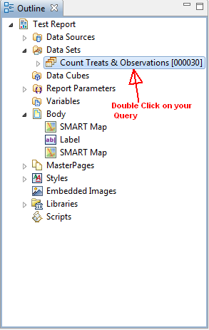
3. Select 'Computed Columns' from the list on the left.
4. Press 'New...' to create a new Computed Column.
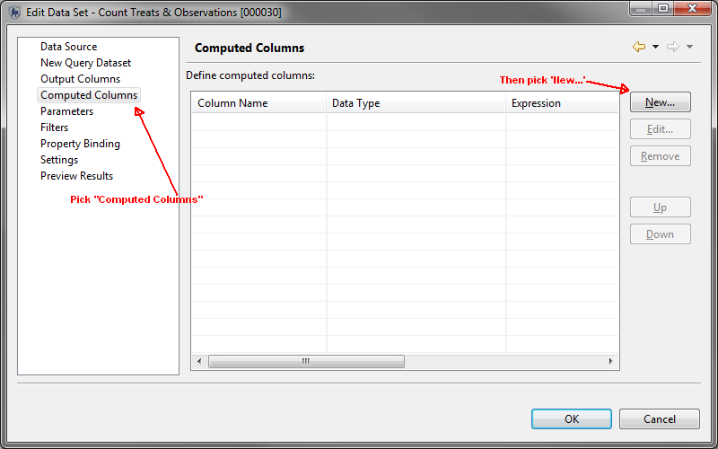
5. Enter the following information for the Computed Column
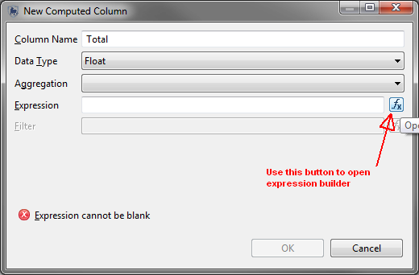
6. Click on the 'fx' button next to the Expression field to open the expression builder. In the expression builder:
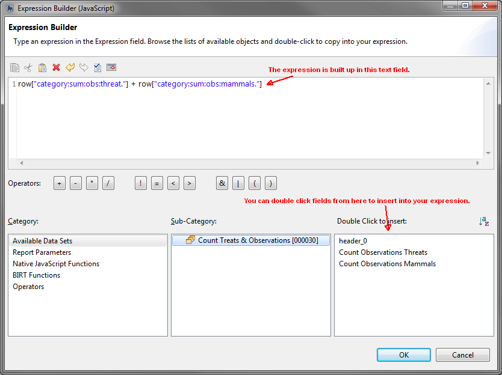
7. Click 'OK' to close the 'New Computed Column' dialog box.
8. Click 'OK' to close the 'Edit Data Set' dialog.
9. You will now see another column "Total" added to your dataset that can be used in the same fashion as your other columns.
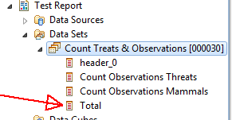
A. Before contacting you SMART administrator check the following settings.
1. Non-Roman Characters
If you have renamed the SMART application folder using a non-roman character (ie other than a-z) then the application will not start.
For example, if you rename SMART application folder as: 'Smart Tổng hợp' then double-clicking on the SMART.exe file fails to start the program. Re-name as 'SMART_win' and the application starts fine.
Note: This is a Windows only problem. Re-naming as Smart Tổng hợp in the Mac Version is no problem and the application starts fine.
2. Real-time virus scanners
Some virus scanners are known to conflict with Eclipse (the platform upon which SMART is based). If you run a real-time virus scanner and SMART will not start or starts/runs very slowly you should try disabling the virus scanner. Alternatively, many virus scanners have the ability to identify files/directories to ignore when scanning.
Trend Micro is one virus scanner that is known to cause issues with SMART. More information can be found in the SMART bug report: Ticket #519
Q. In addition to the Date Filter can I set an additional parameter of Patrol ID when executing my Report?
A. Yes, you can do this for observation & waypoint queries via the features provided by BIRT (reporting engine).
Note: You should still use the date filter as this will improve the performance when running the report.
Q. How do I add a trendline to a report chart?
A. Yes, it is possible using the BIRT scripting interface.
The instruction & scripts below are taken from this page: http://www.birt-exchange.org/devshare/_/designing-birt-reports/781-polynomial-curve-fitting-on-charts and are also available here https://www.assembla.com/spaces/smart-cs/wiki/BIRT_Reporting_Help#question_2
1. Add a second series to your chart.
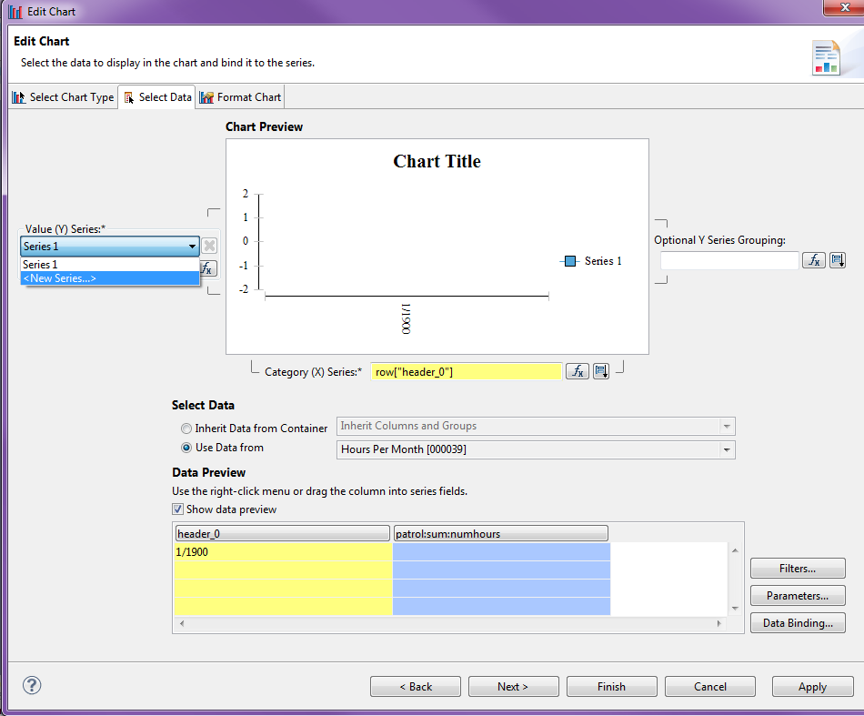
2. Set the series data to the same values as the series you want to compute the trendline for.
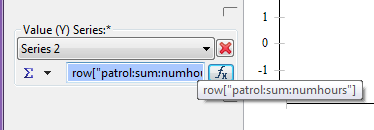
3. Rename the series. In this example "Trendline" was used, however you may use whatever name you like. Remember the name, as it will be used later in the script.
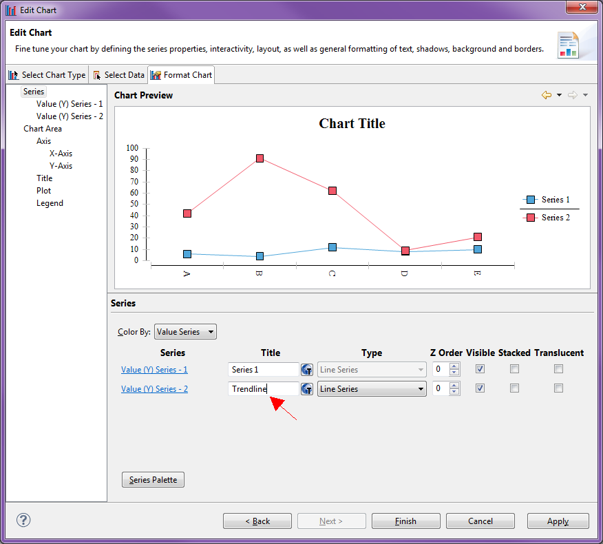
4. In the scripts tab paste the following code.
function beforeGeneration( chart, icsc ) {
var series = chart.getSeries(0);
for (var i=0; i < series.length; i++) {
var seriesid = series[i].getSeriesIdentifier();
var dofit = false;
// ********** Set your series name here ************
if (seriesid == "Trendline") {
degree = 1;
dofit = true;
}
//else if (seriesid == "Another Series") {
// degree = 3;
// dofit = true;
//}
// *************************************************
if (dofit) {
// Reset the point list
rgnReset();
// Add points to regression array. NOTE - assumes uniform distribution of x points
var ds = series[i].getDataSet();
var vals = ds.getValues();
for (var j=0; j < vals.length; j++)
rgnAddPoint(j, vals[j]);
rgnSolve();
// Get new points
for (var j = 0; j < vals.length; j++)
vals[j] = rgnGetYValue(j);
}
}
}
// POLYNOMIAL REGRESSION CODE
degree=2;l8=50;l2=new Array();l3=new Array();l1=new Array();l4=new Array();
function rgnReset(){for(vari=0;i<=l8;i++){l2[i]=0;l2[i+l8]=0;l3[i]=0;l4[i]=0;}}
function rgnAddPoint(x,y){var d2=2*degree;var tx=1;l2[0]=l2[0]+1;l3[0]=l3[0]+(y*1.0);for(var i=1;i<=degree;i++){tx=tx*(x*1.0);l2[i]=l2[i]+tx;l3[i]=l3[i]+(y*1.0*tx)}for(var i=degree+1;i<=d2;i++){tx=tx*(x*1.0);l2[i]=l2[i]+tx;}}
function rgnSolve(){var d=degree;var l5=l2[0];if(l5<=d) d=l5-1;if(d<0)return;bm(d);var l9=gs(d);if(l9 && d>1){l4[0]=0;d--;fm(d);}}
function bm(d){var d1=d+1;l1=new Array();for(var i=0;i<=l8;i++){l1[i]=new Array();for(var k=0;k<=l8;k++){l1[i][k]=0;}}for(var i=0;i<=d;i++){for(var k=0;k<=d;k++){l1[i][k]=l2[i+k];}l1[i][d1]=l3[i];}}
function gs(d){var l9=false;var d1=d+1;var l7;var l6;for(var i=0;i<=d;i++){l7=i;l6=Math.abs(l1[l7][i]);for(var j=i+1;j<=d;j++){if(l6<Math.abs(l1[j][i])){l7=j;l6=Math.abs(l1[l7][i]);}}if(i<l7){for(var k=i;k<=d1;k++){l6=l1[i][k];l1[i][k]=l1[l7][k];l1[l7][k]=l6;}}for(var j=i+1;j<=d;j++){if(l1[i][i]==0) l9=true;else l6=l1[j][i]/l1[i][i];l1[j][i]=0;for(var k=i+1;k<=d1;k++){l1[j][k]=l1[j][k]-(l1[i][k]*l6);}}}for(var j=d;j>=0;j--){l6=l1[j][d1];for(var k=j+1;k<=d;k++){l6 -= l1[j][k]*l4[k];}if(l1[j][j]==0) l9=true;else l4[j]=l6/l1[j][j];}return l9;}
function fm(d){var d1=d+1;for(var i=0;i<=d;i++){l1[i][d1]=l3[i]}}
function rgnGetYValue(x){var d=degree;var y=0;var l5=l2[0];if(l5<=d) d=l5-1;for(var i=0;i<=d;i++){y += l4[i]*Math.pow(x,i);}return y;}
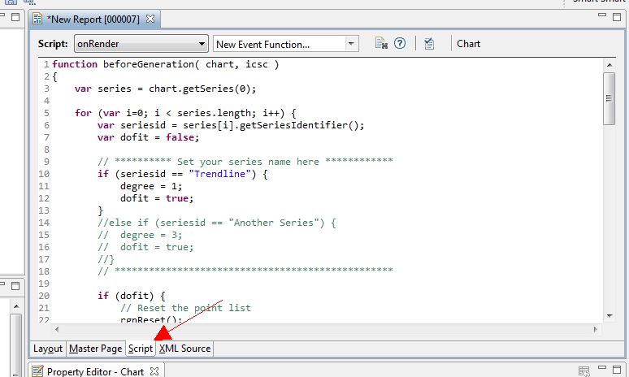
5. Update the script to reference your series.
You will need to change "Trendline" in this section of code to the name of your series (the name supplied in step 3).
// ********** Set your series name here ************
if (seriesid == "Trendline") {
degree = 1;
dofit = true;
}
At this point you can also change the degree:
6. Save and run your report. You should now see the trendline in addition to the raw data.
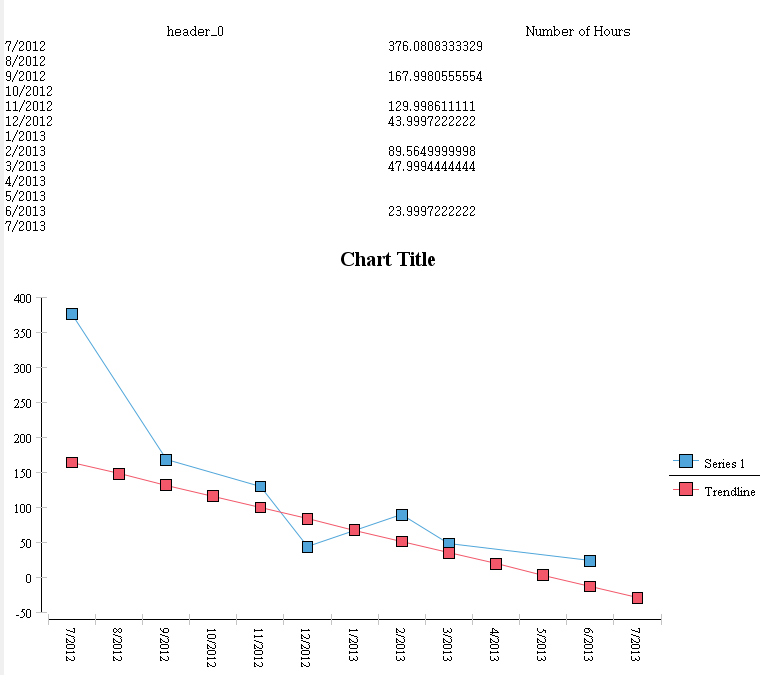
Q. What has happened to my report date ranges when I have SMART set to a different language?
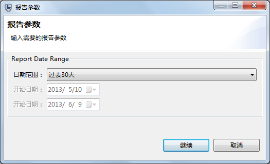
A. The problematic date ranges are the result of two issues:
The issue of the report date range can be fixed by the user:
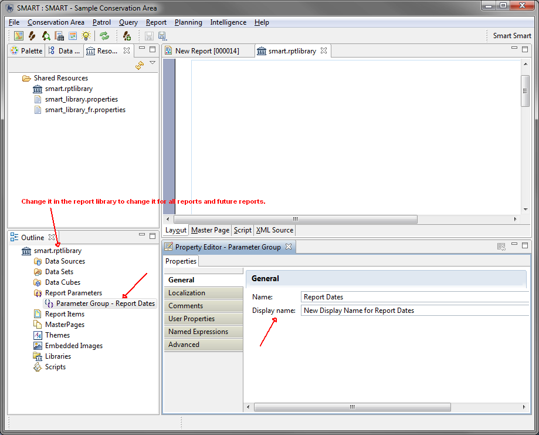
If users really must have this label i18n they can, it is just more complex.
Note: It cannot be done in the library and automatically propagated to all reports (however users can re-use the same properties file).
Q. After restoring a backup I briefly noticed an error screen before the application reset. What is causing this error?
A. This error screen is the result of the Eclipse framework not immediatly able to restart the splash screen and displays the error screen on the first attempt to restart the splash screen. This error does not mean that there has been an error in the backup.
Q. When creating a grid query I am forced to create a very large grid size which is too large to provide any meaning to the results. How is it that I am unable to make a smaller grid size?
A. The computed grid size is based on the extends of all the matching waypoints in the queries. Most likely there are a few outlying "error" waypoints, which would cause the resulting grid to be too large for the program to deal with. If you run an observation query and look at the results you'll probably find one or two waypoints that are outliers. Fix or remove these and your query will likely work. The current maximum grid size is 1000000. So this should allow you to create a 1000x1000 km grid.
Q. I have 15 boundary patrol sectors at my site and would like to have them individually coloured and labelled in SMART. Unfortunately when selecting 'Theme' then Break= Unique Values there is a fixed maximum of 12 classes. How do I add the extra classes?
A. You can pick from the list which only goes to 12 or actually type a custom number into this drop down list.
Q. I have changed the name of my Conservation Area and exported the file. When I import this file I am unable to and SMART says the Conservation Area already exists. Why can I not import this Conservation Area?
A. Simply changing the name of the Conservation Area does not change the unique identifier that is used to track the Conservation Areas. The name change is nothing more than changing the alias of the Conservation Area. To create a new Conservation Area with a new name the recommended procedure is to logout and go through the process of creating a new Conservation Area using the existing one as a template. This will give you all the characteristics of the original Conservation Area with a new unique identifier that the software tracks and a new name that is tracked by the users.
Q. I cannot import my patrol files into the newest version of SMART. Why not
A. A change in the XML schema was required during the development of SMART 3.0. Any older patrol XML files will not import into the newer version. For successful exports and imports you will need to upgrade your entire Conservation Area to 3.0 and then create the patrol xml files.
Q. Where can I find additional help or others to answer my questions?
A. The website http://www.smartconservationtools.org/ has links to the most recent software releases, training materials, project background and a SMART user forum. http://www.smartconservationtools.org/forum